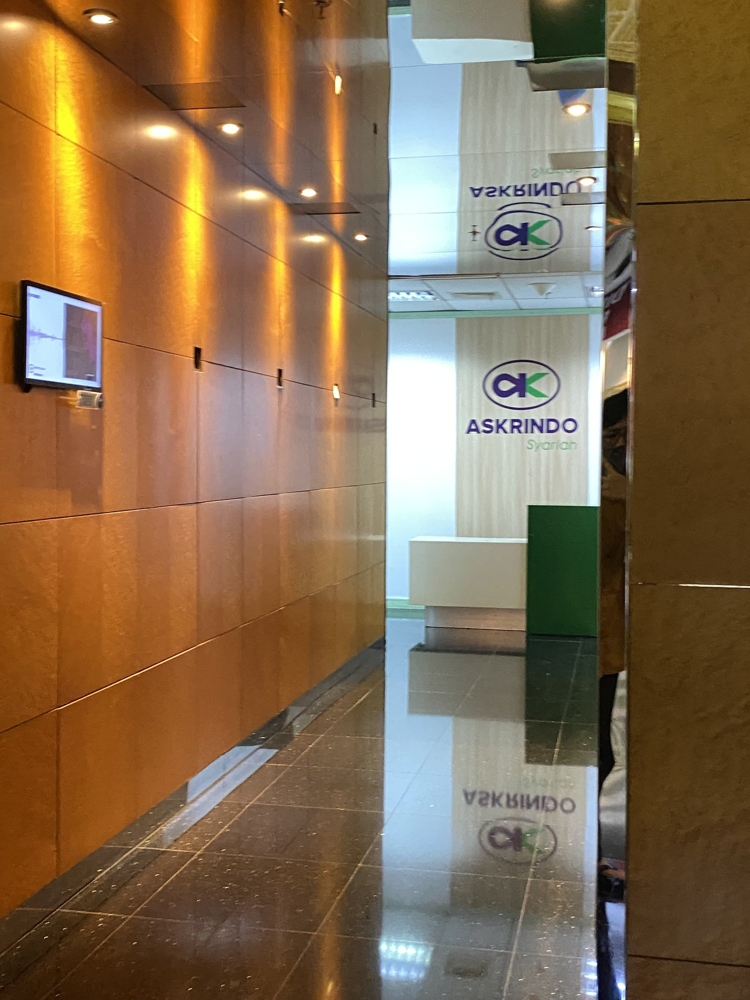

Business Management & Strategy Intern
Jun 2026 - Present
Jakarta, Indonesia
- At Askrindo Syariah, the merger process meant a lot of financial statement work. I looked at capital adequacy, balance sheet alignment, and credit guarantee frameworks.
- The goal was finding regulatory gaps before they surfaced as actual problems. Monitored compliance parameters across governance frameworks on an ongoing basis.

Winter Analyst Intern
Dec 2025 - Feb 2026
London, UK (Remote)
- Wavery put me on a banking merger simulation. The core question: how does a cloud-native fintech actually absorb a legacy bank without losing customers in the process?
- I analysed the integration risks and built the case for where capital should move first - branch digitalization and middleware APIs.